Above the Clouds, Beyond the Map
Bandarban is Bangladesh's most remote and breathtaking hill district — mist-covered peaks, winding jungle rivers, golden temples, and indigenous communities that shape its living landscape.
Bandarban's
Most Iconic Places
From hilltop viewpoints above the clouds to ancient golden temples and cascading jungle waterfalls — these are the places that define Bandarban's extraordinary character.
Explore all destinations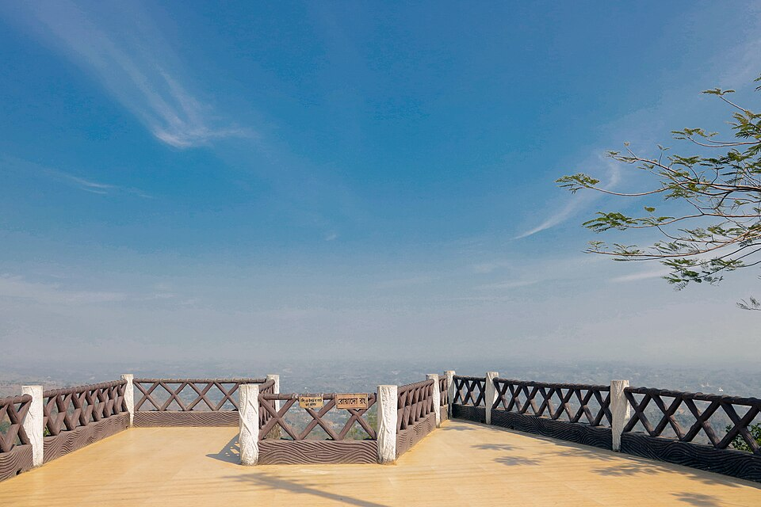
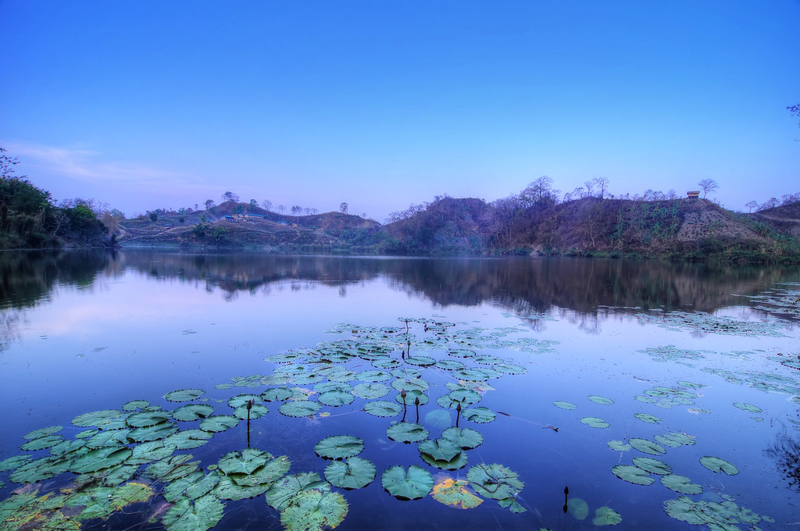
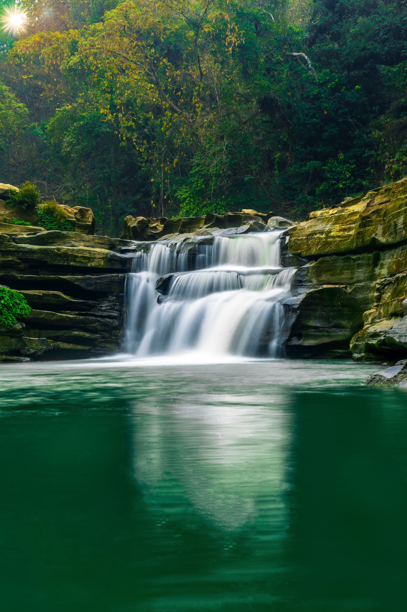
Experience Bandarban at a Gentle Pace
Trek ridgelines, take river journeys, and learn about local communities through respectful, guided encounters.
Explore all experiences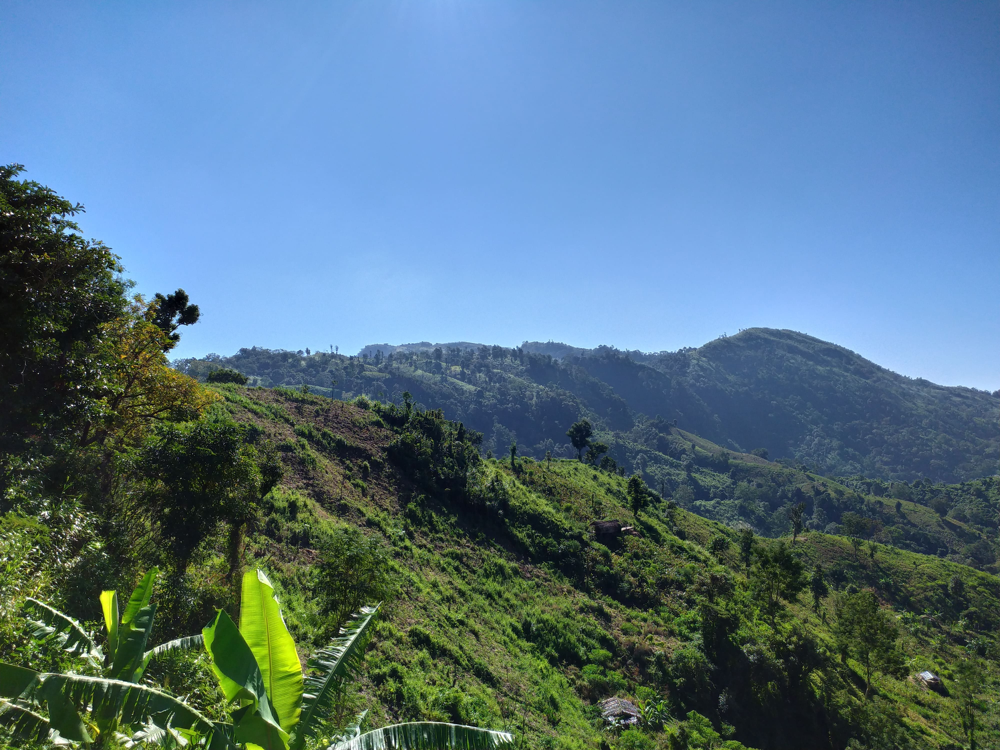
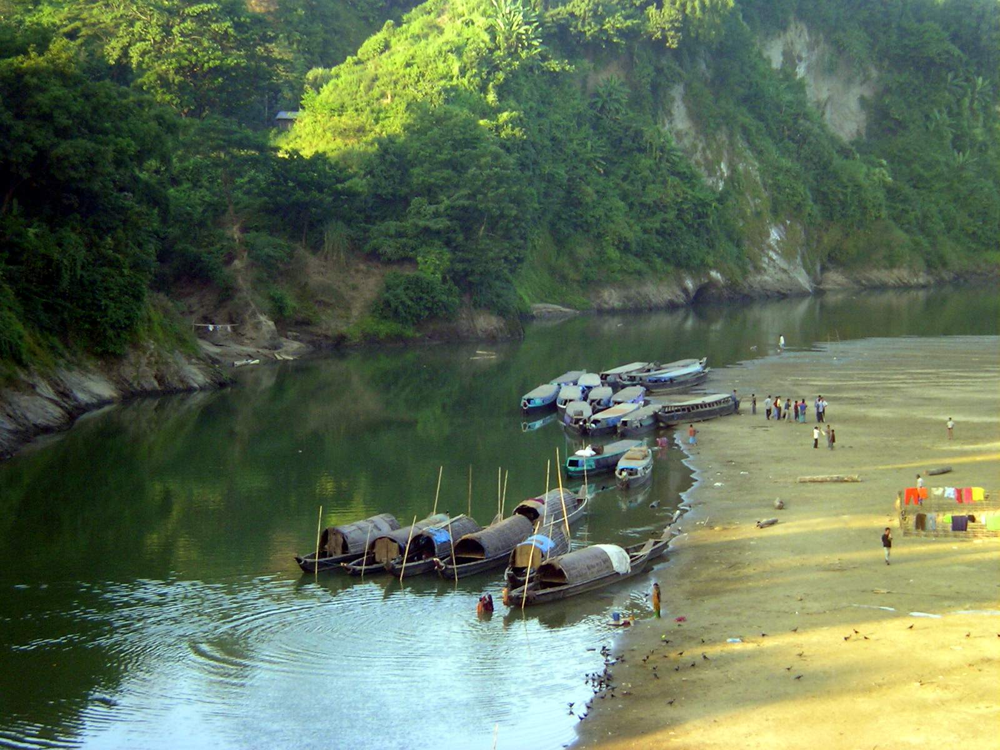
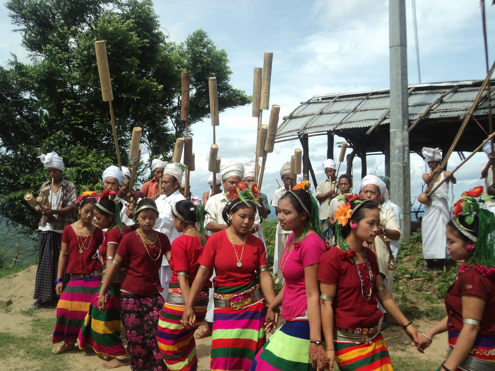
Discover the Hills
Mist-covered ridgelines, sacred lakes, temples, river valleys, and remote waterfalls shape the landscape of Bandarban.
Key Places to Visit
Discover Bandarban’s most iconic hills, lakes, waterfalls, and viewpoints.
A hillside viewpoint above Bandarban town with wide views over valleys and ridgelines. Good for sunrise, sunset, and a first orientation stop.
A mountain lake reached by jeep to Ruma Bazaar followed by a trek. Popular for camping and overnight stays.
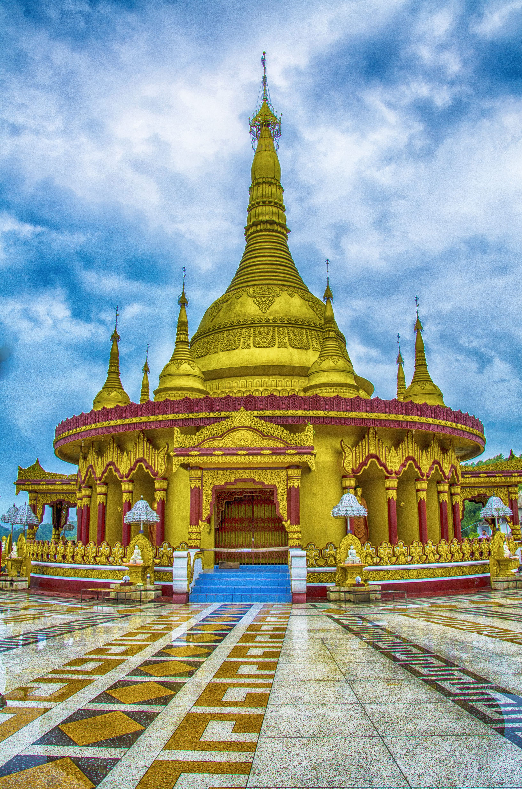
The Bandarban Golden Temple, an important Theravada Buddhist site with hill views and a calm setting.
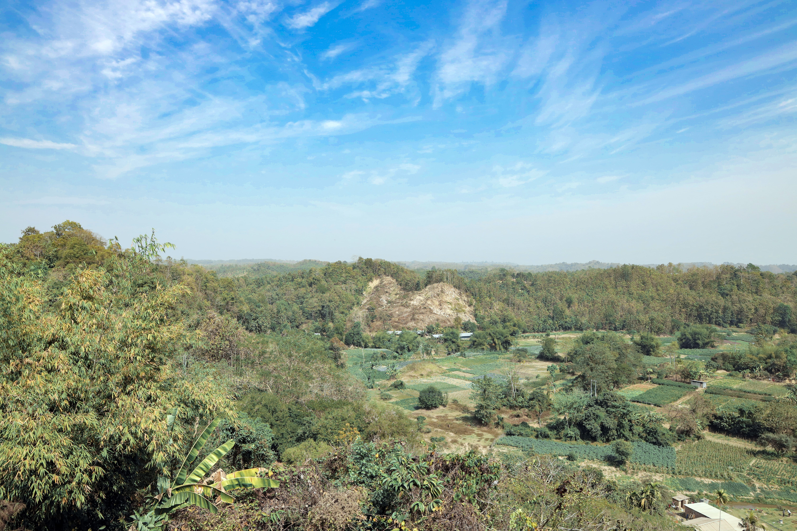
A scenic hill drive with winding roads, cloud views, and a sense of the wider hill landscape.
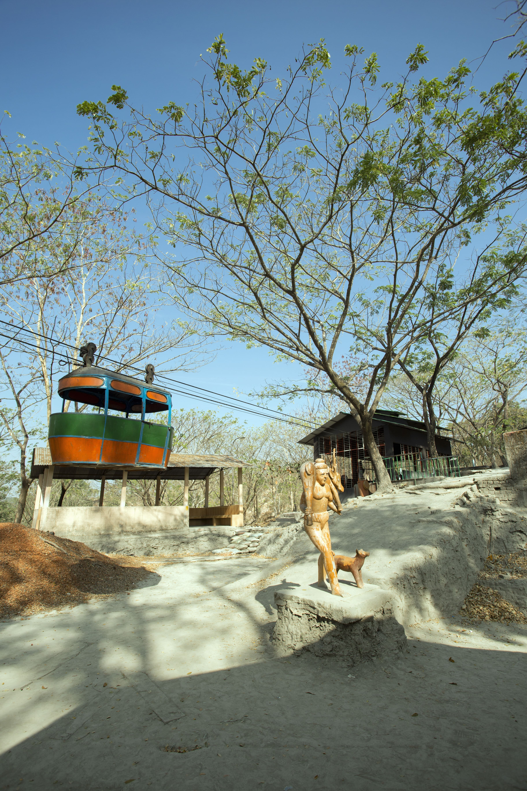
A tourist complex with lake-side walking, a hanging bridge, and family-friendly facilities near town.
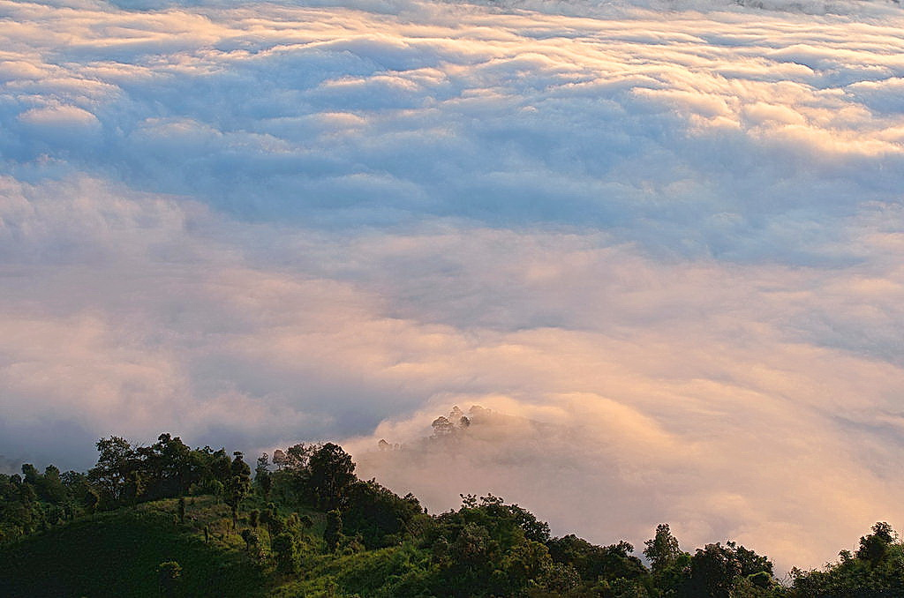
A high-altitude scenic spot known for clouds, cool air, and sunrise or sunset stays.
The main river of the district, used for scenic boat journeys and access to remote areas.
One of the most impressive waterfalls in the hill district and a major trekking destination.
Things to Do
Explore Bandarban through trekking, sightseeing, village visits, and river trips.
How Visitors Spend Time Here
See how visitors spend their time enjoying nature, culture, and mountain landscapes.
Trek to Boga Lake, Keokradong, or deeper routes with a licensed guide when required.
Use the river to connect with scenery, villages, and the slower rhythm of the district.
Observe culture respectfully, ask permission before photographs, and go with a local guide where appropriate.
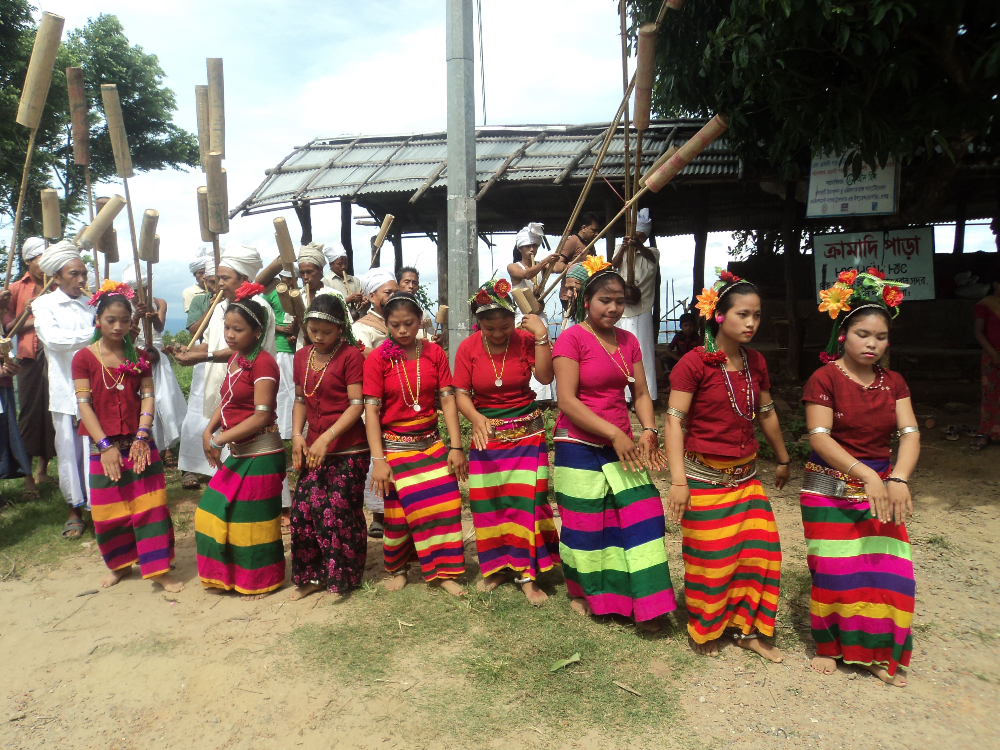
Learn about everyday life, local traditions, and the cultural diversity that gives Bandarban its identity.
Practical Travel Information
Find essential information on access, timing, permits, and travel planning.
Before You Go
Check the basics before your trip, including weather, transport, and permit needs.
Suggested Trip Structure
A Remote Hill District
Learn about Bandarban’s hills, rivers, and diverse indigenous communities.
The district is known for its hills, rivers, mountain routes, and village life. Its attractions are part of a living landscape rather than a museum-style destination.
For visitors, Bandarban works best when approached slowly, respectfully, and with practical planning for access, weather, and permits.
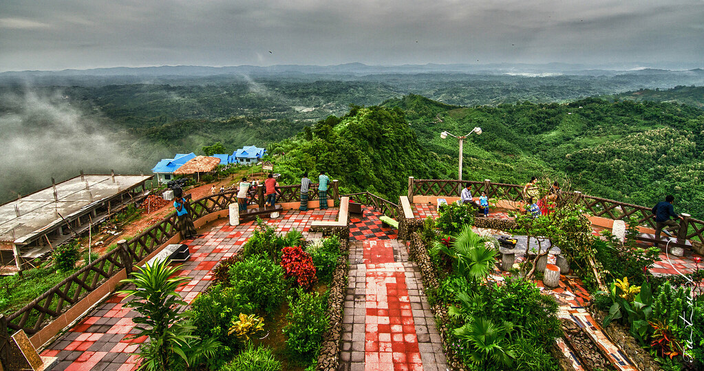
Landscape, Community, and Travel
The district is home to several indigenous communities, and many villages maintain farming, craft, and local trade traditions. Visitors should treat those communities with respect and avoid assumptions about how people live or what they need. Bangla is widely understood, and some communities also speak their own languages. In tourist areas and at main destinations, basic English is generally spoken.
Bandarban is best understood as a place where scenic travel and everyday life remain closely connected.